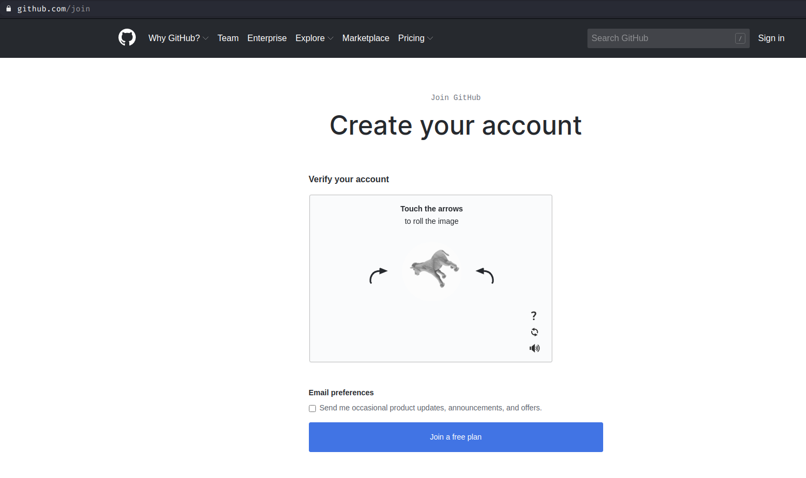
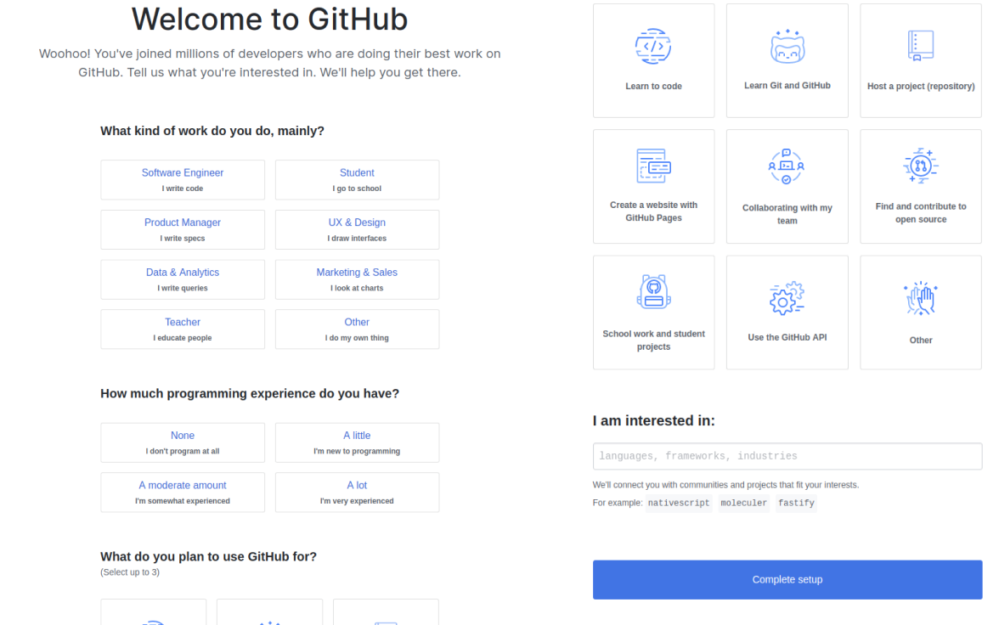
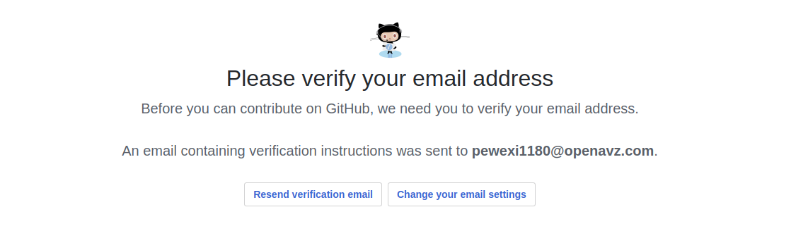
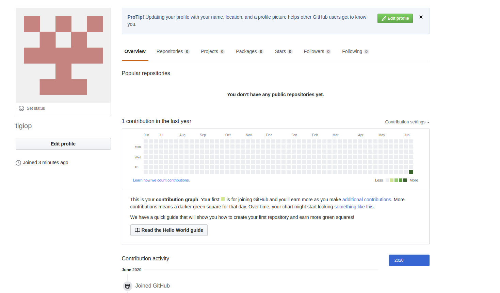

Ao acessar o github.com, você encontrará logo na pagina
inicial um formulário para inscrição (criação de conta).
Preencha os dados conforme solicitado, informando um "username" (nome de usuário), email e "password" (senha).
Ao preencher, clique no botão "Sign up for GitHub" para inscrever-se no GitHub e siga para a próxima etapa.
Validação de conta

Segunda Etapa
Ao proseguir com a criação de conta, será necessário uma verificação solicitada pelo GitHub.
Essa validação pode variar aleatóriamento, porém basta seguir com as orientações informada pelo GitHub e quando
estiver de acordo com o solicitado, "join a free plan" para aceitar o plano livre de conta
Bem-vindo ao GitHub

Terceira Etapa
Maravilha! Agora você já tem uma conta no GitHub.
Na tela acima, você tem a pissíbilidade de informar alguns dados para preencher o seu perfil de usuário. É uma
decisão opcional e para proseguir, basta clicar em "complete setup", para seguir com a próxima etapa.
Confirmação de Email

Quarta Etapa
Bom, apesar de já ter uma conta, a etapa acima solicita uma segunda validação muito importante para a
verificação do email que você cadastro
É solicitado que você acesse o seu email cadastro e clique no link de confirmação enviado pelo GitHub, após
feita essa confirmação, seu email estará validado no GitHub
Conclusão

Perfil de usuário
Agora que você tem uma conta válida no GitHub, bastar dar continuidade com as formas de utilizar essa ferramenta
no intuito de vacilitar o seu versionamento de código.